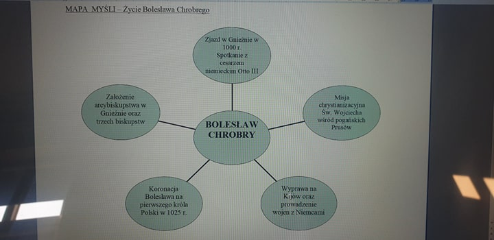

Nauczanie zdalne
Klasa 5A
wychowawca Agnieszka Bielecka
Środa 08.04.2020r
chemia
muzyka
WOS
j.polski
Język polski kl. 5
Zapisz w zeszycie:
Temat lekcji: Chińska chata, czyli o ch.
Zapisz w zeszycie: Uporządkuj wyrazy, przypisując je do odpowiedniej rodziny:
schronić, schroniskowy, schemacik, schodki, schaboszczak, schodkowy, schronisko, schematyczny, schematycznie, schron, schabik, schodek, schabowy, schodkowo.
Rodzina wyrazów SCHEMAT to:.............................
Rodzina wyrazów SCHRONIENIE to :......................
Rodzina wyrazów SCHODY to:...............................
Rodzina wyrazów SCHAB to:...............................
Pisz starannie i uważnie. Zapamiętuj to, co piszesz.
MUZYKA Klasa V
Przepisz lekcje do zeszytu przedmiotowego.Wykonaj zadanie i wyślij na poniższy adres
e-mail : muzykamg@wp.pl
Temat: Głos w różnych barwach.
1. Barwy głosu ludzkiego.
Głos ludzki kryje w sobie wiele barw.Czasami barwę głosu można okreslić jako ciepłą, chropawą i suchą, ostrą, miękką albo głęboką.Te wszystkie cechy pozwalają nam rozpoznawać głosy znajomych oraz odróżniać w muzyce różne rodzaje głosów.
2. Podstawowe głosy ludzkie
sopran- wysoki głos kobiecy
alt- niski głos kobiecy
tenor- wysoki głos męski
bas- niski głos męski
3. Tak zwany ,,biały głos" ludowej śpiewaczki
,,Głos biały"- głos brzmiący naturalnie, głos nieszkolony
Posłuchaj przykładu : ,,W moim ogródecku"
https://www.youtube.com/watch?v=hp4endJMu1E
Zadanie: Posłuchaj fragmentów dwóch utworów
a. Napisz jakim głosem dysponuje śpiewaczka?
https://www.youtube.com/watch?v=nvOT3LoB9GI
b.Napisz jakim głosem dysponuje śpiewak wykonujący tę arię?
https://www.youtube.com/watch?v=BZBOJ45h7nA
Wtorek 07.04.2020r
matematyka
fizyka
plastyka
PLASTYKA - KLASA 5
TEMAT : PISANKA dekoracja świąteczna
/ kompozycja pasowa, rytmiczna /
Do wykonania pracy będzie potrzebna : kartka papieru z bloku rysunkowego lub technicznego
ołówek, kolorowe pisaki lub kredki.
Narysuj na kartce duży kształt jajka, nie musi być idealny bo najważniejszy jest wzór jaki zaprojektujesz.
Wypełnij jajko ozdobnym wzorem tak aby powstała kolorowa pisanka.
Wzór tworzą pojedyncze elementy powtarzające się w różnych układach pasowych i rytmicznych
np. koła, kreski, paski, itp.
Obejrzyj te filmy mogą pomóc w inspiracji
https://www.youtube.com/watch?v=XP7oAVsU7Ng
https://www.youtube.com/watch?v=8DJQcLG20BQ
Wszystkie prace plastyczne które wykonasz w czasie nauki w domu trzeba zachować do oceny.
Matematyka kl. 5
Temat: Obliczanie obwodu prostokątów i kwadratów
Zapoznaj się z tematem lekcji oglądając uważnie filmiki:
www.youtube.com/watch?v=2_SOZcIL3tk
www.youtube.com/watch?v=91CdlANdIrA
Zadanie 1
Długość boku kwadratu wynosi 9 cm.
Prostokąt ma wymiary 15 m i 7 m. Która figura ma większy obwód?
Zadanie 2
Krótszy bok prostokąta ma długość 5cm, a drugi bok jest o 7cm dłuższy, od krótszego.
Długość boku kwadratu jest dwa razy większa, niż długość krótszego boku prostokąta. Oblicz obwody figur.
Poniedziałek 06.04.2020r
język polski
historia
biologia
Język polski kl.5
Zapisz w zeszycie:
Temat lekcji: Czy polecasz przeczytanie lub oglądnięcie lektury pt: ,,Opowieści z Narnii ?
Proszę znaleźć link
https://www.youtube.com/watch?v=aK2-QABqJK8 ( skopiować go i otworzyć). Usiąść wygodnie i WYSŁUCHAĆ. Następnie proszę zastanowić się i napisać odpowiedź do pytania zawartego w temacie lekcji. Uzasadnij swój wybór, tzn. napisz, dlaczego polecasz lub nie polecasz.
HISTORIA kl.5
TEMAT: Panowanie Bolesława Chrobrego.
Poniżej przedstawiona jest zdjęcie "mapy myśli" dotycząca życia Bolesława Chrobrego.
Proszę przerysować ją do zeszytu.

Biologia kl. V Podręcznik z biologii Puls Życia kl. 5 dostępny na stronie -
https://www.nowaera.pl/naukazdalna
Lekcja 06-04-2020
Temat : Liść - wytwórnia pokarmu.
Wysłuchaj prezentacji
https://www.youtube.com/watch?v=AzHHw4-TyKA
Podręcznik str. 106- 109
Notatka :
1. Narysuj pojedynczy liść lipy lub klonu , opisz jego części wyrazami z ramki
Blaszka liściowa, ogonek liściowy , nasada liścia
2. Wypisz funkcje liścia. (str. 106)
Podstawowe funkcja liścia :
- wytwarzanie substancji pokarmowych podczas fotosyntezy,
- ..............................
- ............................
Archiwum
30.03-03.04
25-27.03